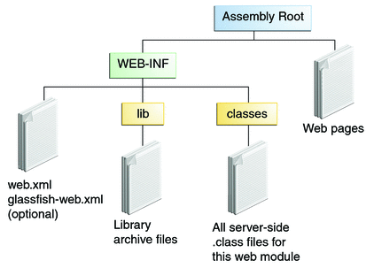

Web Modules: The hello1 Example
In the Java EE architecture, a web module is the smallest deployable and usable unit of web resources. A web module contains web components and static web content files, such as images, which are called web resources. A Java EE web module corresponds to a web application as defined in the Java Servlet specification.
In addition to web components and web resources, a web module can contain other files:
Server-side utility classes, such as shopping carts
Client-side classes, such as applets and utility classes
A web module has a specific structure. The top-level directory of a web module is the document root of the application. The document root is where XHTML pages, client-side classes and archives, and static web resources, such as images, are stored.
The document root contains a subdirectory named WEB-INF, which can contain the following files and directories:
classes: A directory that contains server-side classes: servlets, enterprise bean class files, utility classes, and JavaBeans components
lib: A directory that contains JAR files that contain enterprise beans, and JAR archives of libraries called by server-side classes
Deployment descriptors, such as web.xml (the web application deployment descriptor) and ejb-jar.xml (an EJB deployment descriptor)
A web module needs a web.xml file if it uses JavaServer Faces technology, if it must specify certain kinds of security information, or if you want to override information specified by web component annotations.
You can also create application-specific subdirectories (that is, package directories) in either the document root or the WEB-INF/classes/ directory.
A web module can be deployed as an unpacked file structure or can be packaged in a JAR file known as a Web Archive (WAR) file. Because the contents and use of WAR files differ from those of JAR files, WAR file names use a .war extension. The web module just described is portable; you can deploy it into any web container that conforms to the Java Servlet specification.
To deploy a WAR on the GlassFish Server, the file must contain a runtime deployment descriptor. The runtime DD is an XML file that contains such information as the context root of the web application and the mapping of the portable names of an application’s resources to the GlassFish Server’s resources. The GlassFish Server web application runtime DD is named glassfish-web.xml and is located in the WEB-INF directory. The structure of a web module that can be deployed on the GlassFish Server is shown in Figure 3-2.
For example, the glassfish-web.xml file for the hello1 application specifies the following context root:
<context-root>/hello1</context-root>
Figure 3-2 Web Module Structure
Examining the hello1 Web Module
The hello1 application is a web module that uses JavaServer Faces technology to display a greeting and response. You can use a text editor to view the application files, or you can use NetBeans IDE.
To View the hello1 Web Module Using NetBeans IDE
- From the File menu, choose Open Project.
- In the Open Project dialog, navigate to:
tut-install/examples/web/
- Select the hello1 folder.
- Select the Open as Main Project check box.
- Expand the Web Pages node and double-click the index.xhtml file to view it
in the right-hand pane.
The index.xhtml file is the default landing page for a Facelets application. For this application, the page uses simple tag markup to display a form with a graphic image, a header, a text field, and two command buttons:
<?xml version='1.0' encoding='UTF-8' ?> <!DOCTYPE html PUBLIC "-//W3C//DTD XHTML 1.0 Transitional//EN" "http://www.w3.org/TR/xhtml1/DTD/xhtml1-transitional.dtd"> <html lang="en" xmlns="http://www.w3.org/1999/xhtml" xmlns:h="http://java.sun.com/jsf/html"> <h:head> <title>Facelets Hello Greeting</title> </h:head> <h:body> <h:form> <h:graphicImage url="duke.waving.gif" alt="Duke waving his hand"/> <h2>Hello, my name is Duke. What's yours?</h2> <h:inputText id="username" title="My name is: " value="#{hello.name}" required="true" requiredMessage="Error: A name is required." maxlength="25" /> <p></p> <h:commandButton id="submit" value="Submit" action="response"> </h:commandButton> <h:commandButton id="reset" value="Reset" type="reset"> </h:commandButton> </h:form> ... </h:body> </html>The most complex element on the page is the inputText text field. The maxlength attribute specifies the maximum length of the field. The required attribute specifies that the field must be filled out; the requiredMessage attribute provides the error message to be displayed if the field is left empty. The title attribute provides the text to be used by screen readers for the visually disabled. Finally, the value attribute contains an expression that will be provided by the Hello managed bean.
The Submit commandButton element specifies the action as response, meaning that when the button is clicked, the response.xhtml page is displayed.
- Double-click the response.xhtml file to view it.
The response page appears. Even simpler than the greeting page, the response page contains a graphic image, a header that displays the expression provided by the managed bean, and a single button whose action element transfers you back to the index.xhtml page:
<?xml version='1.0' encoding='UTF-8' ?> <!DOCTYPE html PUBLIC "-//W3C//DTD XHTML 1.0 Transitional//EN" "http://www.w3.org/TR/xhtml1/DTD/xhtml1-transitional.dtd"> <html lang="en" xmlns="http://www.w3.org/1999/xhtml" xmlns:h="http://java.sun.com/jsf/html"> <h:head> <title>Facelets Hello Response</title> </h:head> <h:body> <h:form> <h:graphicImage url="duke.waving.gif" alt="Duke waving his hand"/> <h2>Hello, #{hello.name}!</h2> <p></p> <h:commandButton id="back" value="Back" action="index" /> </h:form> </h:body> </html> - Expand the Source Packages node, then the hello1 node.
- Double-click the Hello.java file to view it.
The Hello class, called a managed bean class, provides getter and setter methods for the name property used in the Facelets page expressions. By default, the expression language refers to the class name, with the first letter in lowercase (hello.name).
package hello1; import javax.faces.bean.ManagedBean; import javax.faces.bean.RequestScoped; @ManagedBean @RequestScoped public class Hello { private String name; public Hello() { } public String getName() { return name; } public void setName(String user_name) { this.name = user_name; } } - Under the Web Pages node, expand the WEB-INF node and double-click the web.xml
file to view it.
The web.xml file contains several elements that are required for a Facelets application. All these are created automatically when you use NetBeans IDE to create an application:
A context parameter specifying the project stage:
<context-param> <param-name>javax.faces.PROJECT_STAGE</param-name> <param-value>Development</param-value> </context-param>A context parameter provides configuration information needed by a web application. An application can define its own context parameters. In addition, JavaServer Faces technology and Java Servlet technology define context parameters that an application can use.
A servlet element and its servlet-mapping element specifying the FacesServlet:
<servlet> <servlet-name>Faces Servlet</servlet-name> <servlet-class>javax.faces.webapp.FacesServlet</servlet-class> <load-on-startup>1</load-on-startup> </servlet> <servlet-mapping> <servlet-name>Faces Servlet</servlet-name> <url-pattern>/faces/*</url-pattern> </servlet-mapping>A welcome-file-list element specifying the location of the landing page; note that the location is faces/index.xhtml, not just index.xhtml:
<welcome-file-list> <welcome-file>faces/index.xhtml</welcome-file> </welcome-file-list>
Introduction to Scopes
In the Hello.java class, the annotations javax.faces.bean.ManagedBean and javax.faces.bean.RequestScoped identify the class as a JavaServer Faces managed bean using request scope. Scope defines how application data persists and is shared.
The most commonly used scopes in JavaServer Faces applications are the following:
Request (@RequestScoped): Request scope persists during a single HTTP request in a web application. In an application like hello1, where the application consists of a single request and response, the bean uses request scope.
Session (@SessionScoped): Session scope persists across multiple HTTP requests in a web application. When an application consists of multiple requests and responses where data needs to be maintained, beans use session scope.
Application (@ApplicationScoped): Application scope persists across all users’ interactions with a web application.
For more information on scopes in JavaServer Faces technology, see Using Managed Bean Scopes.
Packaging a Web Module
A web module must be packaged into a WAR in certain deployment scenarios and whenever you want to distribute the web module. You package a web module into a WAR by executing the jar command in a directory laid out in the format of a web module, by using the Ant utility, or by using the IDE tool of your choice. This tutorial shows you how to use NetBeans IDE or Ant to build, package, and deploy the hello1 sample application.
To Set the Context Root
A context root identifies a web application in a Java EE server. A context root must start with a forward slash (/) and end with a string.
In a packaged web module for deployment on the GlassFish Server, the context root is stored in glassfish-web.xml.
To view or edit the context root, follow these steps.
- Expand the Web Pages and WEB-INF nodes of the hello1 project.
- Double-click glassfish-web.xml.
- In the General tab, observe that the Context Root field is set to
/hello1.
If you needed to edit this value, you could do so here. When you create a new application, you type the context root here.
- (Optional) Click the XML tab.
Observe that the context root value /hello1 is enclosed by the context-root element. You could also edit the value here.
To Build and Package the hello1 Web Module Using NetBeans IDE
- From the File menu, choose Open Project.
- In the Open Project dialog, navigate to:
tut-install/examples/web/
- Select the hello1 folder.
- Select the Open as Main Project check box.
- Click Open Project.
- In the Projects tab, right-click the hello1 project and select Build.
To Build and Package the hello1 Web Module Using Ant
- In a terminal window, go to:
tut-install/examples/web/hello1/
- Type the following command:
ant
This command spawns any necessary compilations, copies files to the directory tut-install/examples/web/hello1/build/, creates the WAR file, and copies it to the directory tut-install/examples/web/hello1/dist/.
Deploying a Web Module
You can deploy a WAR file to the GlassFish Server by
Using NetBeans IDE
Using the Ant utility
Using the asadmin command
Using the Administration Console
Copying the WAR file into the domain-dir/autodeploy/ directory
Throughout the tutorial, you will use NetBeans IDE or Ant for packaging and deploying.
To Deploy the hello1 Web Module Using NetBeans IDE
- Right-click the hello1 project and select Deploy.
To Deploy the hello1 Web Module Using Ant
- In a terminal window, go to:
tut-install/examples/web/hello1/
- Type the following command:
ant deploy
Running a Deployed Web Module
Now that the web module is deployed, you can view it by opening the application in a web browser. By default, the application is deployed to host localhost on port 8080. The context root of the web application is hello1.
To Run a Deployed Web Module
- Open a web browser.
- Type the following URL:
http://localhost:8080/hello1/
- Type your name and click Submit.
The response page displays the name you submitted. Click the Back button to try again.
Listing Deployed Web Modules
The GlassFish Server provides two ways to view the deployed web modules: the Administration Console and the asadmin command.
To List Deployed Web Modules Using the Administration Console
- Open the URL http://localhost:4848/ in a browser.
- Select the Applications node.
The deployed web modules appear in the Deployed Applications table.
To List Deployed Web Modules Using the asadmin Command
- Type the following command:
asadmin list-applications
Updating a Web Module
A typical iterative development cycle involves deploying a web module and then making changes to the application components. To update a deployed web module, follow these steps.
To Update a Deployed Web Module
- Recompile any modified classes.
- Redeploy the module.
- Reload the URL in the client.
Dynamic Reloading
If dynamic reloading is enabled, you do not have to redeploy an application or module when you change its code or deployment descriptors. All you have to do is copy the changed pages or class files into the deployment directory for the application or module. The deployment directory for a web module named context-root is domain-dir/applications/context-root. The server checks for changes periodically and redeploys the application, automatically and dynamically, with the changes.
This capability is useful in a development environment because it allows code changes to be tested quickly. Dynamic reloading is not recommended for a production environment, however, because it may degrade performance. In addition, whenever a reload is done, the sessions at that time become invalid, and the client must restart the session.
In the GlassFish Server, dynamic reloading is enabled by default.
To Disable or Modify Dynamic Reloading
If for some reason you do not want the default dynamic reloading behavior, follow these steps in the Administration Console.
- Open the URL http://localhost:4848/ in a browser.
- Select the GlassFish Server node.
- Select the Advanced tab.
- To disable dynamic reloading, deselect the Reload Enabled check box.
- To change the interval at which applications and modules are checked for
code changes and dynamically reloaded, type a number of seconds in the Reload
Poll Interval field.
The default value is 2 seconds.
- Click the Save button.
Undeploying Web Modules
You can undeploy web modules and other types of enterprise applications by using either NetBeans IDE or the Ant tool.
To Undeploy the hello1 Web Module Using NetBeans IDE
- Ensure that the GlassFish Server is running.
- In the Services window, expand the Servers node, GlassFish Server instance, and the Applications node.
- Right-click the hello1 module and choose Undeploy.
- To delete the class files and other build artifacts, right-click the project and choose Clean.
To Undeploy the hello1 Web Module Using Ant
- In a terminal window, go to:
tut-install/examples/web/hello1/
- Type the following command:
ant undeploy
- To delete the class files and other build artifacts, type the following command:
ant clean